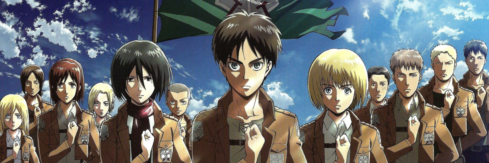

Home

Background
Attack on Titan is one of the most popular anime and manga series to date since its anime’s first season release in 2013. In fact, according to MyAnimeList, Attack on Titan is the second most popular anime of all time. The series has become a fan favorite and is highly regarded, having received high ratings from multiple viewers such as IMDB, Rotten Tomatoes, MyAnimeList, etc. Its manga series is also extremely successful, having sold around 100 million copies as of the end of 2019.
Setting

Attack on Titan takes place in a German-inspired civilization set inside three circular, concentric walls: Wall Maria, Wall Rose, Wall Sina, respectively. Its population has been led to believe that over a century ago, humanity took refuge inside these walls after being driven to the brink of extinction. This threat was caused by titans, gigantic beings that somewhat resembled humans who attack and devour humans on sight. The country’s military developed omnidirectional gear, a piece of technology that allows its users to propel at immense speeds in three dimensions to combat said, titans. The story follows Eren Yaeger, a young boy from the Shiganshina district which is located on the outermost area of the three walls. After more than a hundred years of living in peace, humanity was once again reminded of the threat that titans bring after the Colossal Titan and Armored Titan breached the gates of Shiganshina District and Wall Maria respectively. Due to flying rubble caused by the breach, a large boulder crippled Eren’s mom and he witnessed her getting caught and eaten by a titan. From then on, Eren swore to seek revenge by killing all titans.
Production
Author
Hajime Isayama is the manga artist who wrote and illustrated Attack on Titan. He was born on August 29, 1986, in Ōyama, Ōita Prefecture, Japan. He participated in Manga making contests during high school at Hita Rinko Senior High School. After his high school graduation, he enrolled in Kyushu Designer Gakuen under the arts department’s manga design program. Attack on Titan initially started as a 65-page one-shot version in 2006 which received a “Fine Work” award.
Today, the story of Attack on Titan can be enjoyed through the following:
Manga
Created by Hajime Isayama, this series was first published on September 9, 2009, in the first issue of Kodansha’s monthly publication Bessatsu Shonen Magazine. Its last chapter was released on April 9, 2021, for a total of 139 chapters. It was also announced on November 8, 2020, that the manga would have a colored serialization.
Anime
The first season of the anime adaptation was first broadcast on April 7, 2013 and ended on September 29, 2013. Before the release of the second season, there was a 4-year hiatus. The second season was aired from April 1, 2017, to June 17, 2017, while the third season was broadcast between July 23, 2018, and July 1, 2019. The first three seasons were produced by Wit Studio. However, a studio change was announced for the final season due to scheduling conflicts with MAPPA studio taking over. The first half of season 4 aired on December 7, 2020, until March 29, 2021. The second half of the final season began airing on January 10, 2022. p>
Others
Attack On Titan can also be explored through other various media forms such as:
- Novels
- Videogames
- Live-action movies